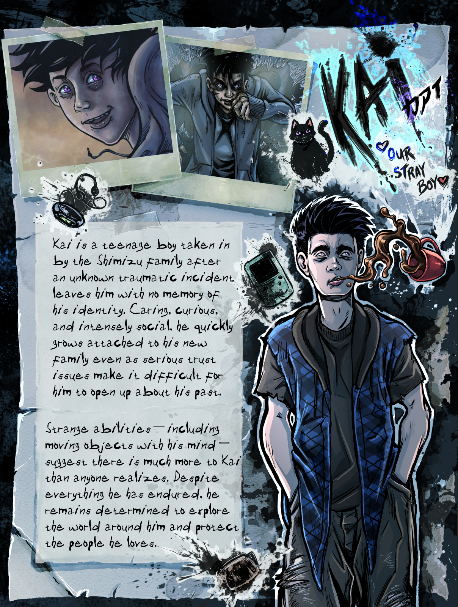

MEET THE CHARACTERS
Nocturne 21 Cast
Select a character tab to explore their scrapbook profile!
New to the story? Read Nocturne 21, learn more about the comic, or browse the complete comic archive.

Select a character tab to explore their scrapbook profile!
New to the story? Read Nocturne 21, learn more about the comic, or browse the complete comic archive.
